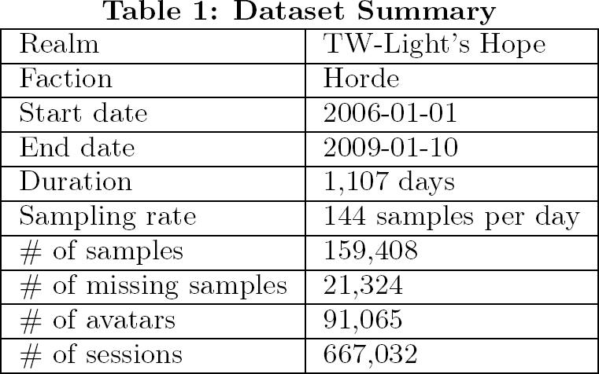
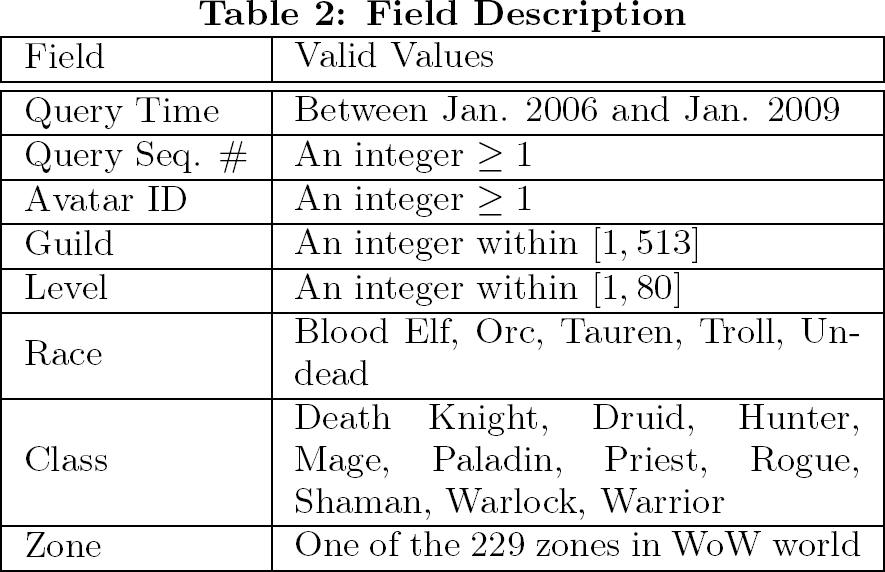
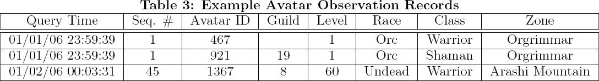

|
Overview |
| |
From the perspective of game system designers, players' behavior
is one of the most important factors they must consider
when designing game systems. To gain a fundamental
understanding of the game play behavior of online gamers,
exploring users' game play time provides a good starting
point. This is because the concept of game play time is applicable to all genres of games and it enables us to model the
system workload as well as the impact of system and network
QoS on users' behavior. It can even help us predict players'
loyalty to specific games.
We present the World ofWarcraft Avatar History (WoWAH) dataset, which
comprises the records of 91,065 avatars. The data includes
the avatars' game play times and a number of attributes,
such as their race, profession, current level, and in-game locations, during a 1,107-day period between Jan. 2006 and
Jan. 2009.
|
|
|
|
|
|
Trace Description |
|
We collected the data over 1,107 days between Jan. 2006
and Jan. 2009. During the monitored period, 91,065 avatars,
and 667,032 sessions associated with the avatars were observed.
Because the sampling interval was 10 minutes, there
should have been 159,408 samples, each providing the status
of all the avatars online during the sampling period. To protect players' privacy,
we mapped the avatars' names and guild names randomly as
positive integers with a consistent mapping (i.e., the same
names were always mapped to the same integers). A summary
of the dataset is presented in Table 1.

A log file is composed of two arrays: Persistant_Storage
and RoundInfo. All the information collected about the
avatars' history is stored in the Persistant_Storage array.
Each element stores the information about an avatar observed
during the sampling period; thus, the number of elements
is equal to the number of avatars online in that sampling
interval. An element is a string that contains 11 fields
separated by commas. The 11 fields are dummy, query time,
query sequence number, avatar ID, guild, level, race,
class, zone, dummy, dummy. The meanings and valid values
of the fields are detailed in Table 2. We also provide three
sample records in Table 3. The first record, which relates
to the initial query, indicates that we observed an avatar
with ID 467 at 23:59:39 on 01/01/2006, and the avatar was
a level-1 non-guilded Orc Warrior in Orgrimmar.


|
|
Download |
|
Direct Link: World of Warcraft Avatar History (RAR format, 577,334,422 bytes) |
|
Reference |
| |
Yeng-Ting Lee, Kuan-Ta Chen, Yun-Maw Cheng, and Chin-Laung Lei, "World of Warcraft Avatar History Dataset," In Proceedings of ACM Multimedia Systems 2011, Feb 2011.
|
|
|
|
|
Research Work using WOWAH |
| |
- Kuan-Ta Chen, Hsing-Kuo Kenneth Pao, and Hong-Chung Chang, "Game Bot Identification based on Manifold Learning," Proceedings of ACM NetGames 2008, 2008.
- Pin-Yun Tarng and Kuan-Ta Chen and Polly Huang, "On Prophesying Online Gamer Departure," Proceedings of ACM NetGames 2009 (poster), 2009.
- Yeng-Ting Lee and Kuan-Ta Chen, "Is Server Consolidation Beneficial to MMORPG? A Case Study of World of Warcraft," Proceedings of IEEE CLOUD 2010, 2010.
|
|
Contact |
|
If you have any question and/or comments regarding WOWAH, or if you want to list your publications on this page, please feel free to contact Kuan-Ta Chen at swc@iis.sinica.edu.tw. |
|